Benchmark with simulated profiles
In this benchmark, we want to investigate possible systematic artifacts using simulated profiles.
The simulations include all the possible pairs of signatures, mixed at a 70% - 30% ratio in the first section and at a 60% - 40% ratio in the second section. This also includes the cases where both high and low contributions emerge from the same signature, effectively creating a simulated profile from a pure signature.
For each combination, we will get 20 simulated profiles which are built as a linear combination of the signatures weights multipled by 500 (to simulate 500 mutations), perturbed with a 5% uniform noise and finally rounded up.
70%/30% mix of two signatures
- Setting up the global parameters for the simulation.
# Using the PMID of Rosenthal et al. as a seed.
set.seed(26899170)
simulated_profiles_70_file <- "simulated_profiles_70.rda"
signatures.ref<-as.matrix(signatures.nature2013)
noise_level <- 0.05
ratio <- 0.7;
n_sample <- 20- Building the samples.
generate_samples <- function(n_sample, ratio, signatures.ref, noise_level) {
## samples is a data.frame whith one sample per row. Each column is the number of mutations in each context
samples <- data.frame(matrix(nrow = n_sample * nrow(signatures.ref) * nrow(signatures.ref), ncol = ncol(signatures.ref)))
## sample_s1 is a vector with the first signature used for each sample (row) in the samples DF.
sample_s1 <- rep(rep(1:nrow(signatures.ref), each = nrow(signatures.ref)), times = n_sample)
## sample_s1 is a vector with the second signature used for each sample (row) in the samples DF.
sample_s2 <- rep(rep(1:nrow(signatures.ref), times = nrow(signatures.ref)), times = n_sample)
index <- 1;
for (n in 1:n_sample) {
for (s1 in 1:nrow(signatures.ref)) {
samples[index:(index + nrow(signatures.ref) - 1), ] <-
round(
runif(ncol(signatures.ref) * nrow(signatures.ref), 1 - noise_level, 1 + noise_level) *
500 * t(ratio * signatures.ref[s1, ] + (1 - ratio) * t(signatures.ref)))
index <- index + nrow(signatures.ref)
}
}
colnames(samples) <- colnames(signatures.ref)
rownames(samples) <- 1:nrow(samples)
theoretical_weights <- matrix(0, nrow = nrow(samples), ncol = nrow(signatures.ref))
for (s in 1:nrow(signatures.ref)) {
theoretical_weights[which(sample_s1 == s), s] <-
theoretical_weights[which(sample_s1 == s), s] + ratio
}
for (s in 1:nrow(signatures.ref)) {
theoretical_weights[which(sample_s2 == s), s] <-
theoretical_weights[which(sample_s2 == s), s] + (1 - ratio)
}
return(list(samples = samples, sample_s1 = sample_s1, sample_s2 = sample_s2,
theoretical_weights = theoretical_weights))
}samples_list <- generate_samples(n_sample, ratio, signatures.ref, noise_level)
samples <- samples_list[["samples"]]
sample_s1 <- samples_list[["sample_s1"]]
sample_s2 <- samples_list[["sample_s2"]]
theoretical_weights <- samples_list[["theoretical_weights"]]- Getting the predicted weights using the deconstructSig package.
run_deconstructSigs <- function(samples) {
## DS.weights is a data.frame with the results for each sample. Each row contains
## the imputed weights from the corresponding sample
DS.weights <- matrix(nrow = nrow(samples), ncol = nrow(signatures.ref))
colnames(DS.weights) <- rownames(signatures.ref)
rownames(DS.weights) <- 1:nrow(samples)
DS.times <- vector(mode = "numeric", length = nrow(samples))
for (s in 1:nrow(samples)) {
sample.start.time <- Sys.time()
w <- whichSignatures(tumor.ref = samples,
signatures.ref = signatures.nature2013,
sample.id = s, contexts.needed = TRUE)$weights
sample.end.time <- Sys.time()
DS.weights[s, ] <- as.matrix(w)
DS.times[s] <- difftime(sample.end.time, sample.start.time, units = "secs")
}
return(list(DS.weights = DS.weights, DS.times = DS.times))
}DS.results <- run_deconstructSigs(samples)
DS.weights <- DS.results[["DS.weights"]]
DS.times <- DS.results[["DS.times"]]
# Save the results in an R object
simulated_profiles_70 = list(
ratio = ratio,
n_sample = n_sample,
noise_level = noise_level,
signatures = signatures.ref,
sample_s1 = sample_s1,
sample_s2 = sample_s2,
theoretical_weights = theoretical_weights,
samples = samples,
DS.weights = DS.weights,
DS.times = DS.times
)
save(simulated_profiles_70, file = simulated_profiles_70_file, compress = "bzip2")- Functions to generate the plots.
## FUNCTION empty_plot creates an empty canvas for each boxplot sub-figure
empty_plot <- function(title = NA, xlab = NA, ylab = NA) {
par("mar" = c(2, 2, 3, 1))
plot(NA, xlim = c(1, 27), ylim = c(0, 103), axes = F, xlab = NA, ylab = NA, main = NA)
if (!missing(title)) {
title(main = title, line = 1, cex.main = 0.6)
}
if (!missing(xlab)) {
title(xlab = xlab, line = 0.5, cex.lab = 0.6)
}
if (!missing(ylab)) {
title(ylab = ylab, line = 0.7, cex.lab = 0.6)
}
axis(2, las = 2, lwd = 0, at = c(0, 100 - ratio * 100, ratio * 100, 100), cex.axis = 0.7, line = -1)
axis(1, at = 1:27, labels = sub("Signature.", "", rownames(signatures.ref)), las = 2, cex.axis = 0.5, lwd = 0, lwd.ticks = 0, line = -1)
abline(h = 0)
abline(h = 100)
abline(h = ratio * 100, lty = 3)
abline(h = 100 - ratio * 100, lty = 3)
abline(v = 0:28 + 0.5, lwd = 0.5)
}
## FUNCTION boxplots creates each boxplot sub-figure (call empty_plot to generate the empty canvas)
boxplots <- function(s1) {
## First plot where signature s1 is in high proportion
if (screen() > 1) {
screen(screen() + 1)
}
empty_plot(title = paste0(ratio * 100, "% of ", rownames(signatures.ref)[s1]),
xlab = paste0(" + ", 100 - ratio * 100, "% of this signature"),
ylab = paste("%", rownames(signatures.ref)[s1]))
boxplot(DS.weights[sample_s1 == s1, s1] * 100 ~ sample_s2[sample_s1 == s1],
ylim = c(0, 100), pch = 20, cex = 0.3, border = "blue", boxwex = 0.7, add = T, axes = F)
## Second plot where signature s1 is in low proportion
screen(screen() + 1)
empty_plot(title = paste0(100 - ratio * 100, "% of ", rownames(signatures.ref)[s1]),
xlab = paste0(" + ", ratio * 100, "% of this signature"))
boxplot(DS.weights[sample_s2 == s1, s1] * 100 ~ sample_s1[sample_s2 == s1],
ylim = c(0, 100), pch = 20, cex = 0.3, border = "blue", boxwex = 0.7, add = T, axes = F)
## Third plot where signature s1 is not used, with high proportion of the other signature
screen(screen() + 1)
empty_plot(title = paste("No ", rownames(signatures.ref)[s1]),
xlab = paste0(ratio * 100, "% of this signature"))
boxplot(DS.weights[(sample_s1 != s1 & sample_s2 != s1), s1] * 100 ~
factor(sample_s1[(sample_s1 != s1 & sample_s2 != s1)], levels = unique(sample_s1)),
ylim = c(0, 100), pch = 20, cex = 0.3, border = "blue", boxwex = 0.7, add = T, axes = F)
## Fourth plot where signature s1 is not used, with low proportion of the other signature
screen(screen() + 1)
empty_plot(title = paste("No ", rownames(signatures.ref)[s1]),
xlab = paste0(100 - ratio * 100, "% of this signature"))
boxplot(DS.weights[(sample_s1 != s1 & sample_s2 != s1), s1] * 100 ~
factor(sample_s2[(sample_s1 != s1 & sample_s2 != s1)], levels = unique(sample_s2)),
ylim = c(0, 100), pch = 20, cex = 0.3, border = "blue", boxwex = 0.3, add = T, axes = F)
}- Generate the PDF with the results
pdf_file <- paste0("Simulated_profiles_", ratio * 100, "_", n_sample, "_", noise_level * 100, ".pdf")
pdf(pdf_file, paper = "a4r", width = 0, height = 0)
plot(NA, xlim = 0:1, ylim = 0:1,
main = paste0("Benchmark ", 100 * ratio, "% - ", 100 - ratio * 100, "%"),
axes = F, xlab = NA, ylab = NA)
text(0, 0.95, labels = "Parameters:", pos = 4)
text(0.02, 0.90, labels = paste0("- ", 100 * ratio, "% - ", 100 - ratio * 100, "% pairwise patterns"), pos = 4)
text(0.02, 0.85, labels = paste0("- ", n_sample, " samples for each combination"), pos = 4)
text(0.02, 0.80, labels = paste0("- ", noise_level * 100 , "% uniform noise"), pos = 4)
text(0, 0.70, labels = "Each row corresponds to a particular signature (27 in total)", pos = 4)
text(0, 0.65, labels = "For each signature, there are 4 boxplots showing the contribution of that signature:", pos = 4)
text(0.02, 0.60, labels = paste0("1. when it forms ", ratio * 100, "% of the simulated pattern, w.r.t. the signature that forms 30% of the pattern"), pos = 4)
text(0.02, 0.55, labels = paste0("2. when it forms ", 100 - ratio * 100, "% of the simulated pattern, w.r.t. the signature that forms 70% of the pattern"), pos = 4)
text(0.02, 0.50, labels = paste0("3. when it is not in the simulated pattern, w.r.t. the signature that forms ", ratio * 100, "% of the pattern"), pos = 4)
text(0.02, 0.45, labels = paste0("4. when it is not in the simulated pattern, w.r.t. the signature that forms ", 100 - ratio * 100, "% of the pattern"), pos = 4)
text(0, 0.35, labels = "Combinations of high sig.1B and low sig.13 or low sig.R2, or combinations of high sig.5 and low sig.2 or low sig.13 are", pos = 4)
text(0, 0.30, labels = "more challenging to decompose. Nearly all other cases behave as expected.", pos = 4)
# Prints 9 sets (pages) each with 3 rows of 4 plots (1 row per signature)
for (set in 1:9) {
split.screen(c(3, 4))
for (s1 in (3*(set-1)+1):(3*(set-1)+3)) {
boxplots(s1)
}
close.screen(all.screens = T)
}
dev.off()Results
The output is available on Simulated_profiles_70_20_5.pdf. It shows that combinations of high sig.1B and low sig.13 or low sig.R2, combinations of high sig.5 and low sig.2 or low sig.13 are more challenging to decompose.
You can also see the plots here:
## Plot the different tabs. Use results = 'asis' to print HTML code, in this case the div and header sections
## used to create the tabs.
for (set in 1:9) {
cat(paste0('<div id="signatures-70-', set, '" class="section level3">
<h3>Signatures ', paste(sub("Signature.", "", rownames(signatures.ref)[(3*(set-1)+1):(3*(set-1)+3)]), collapse = "/"), '</h3>'))
split.screen(c(3, 4))
for (s1 in (3*(set-1)+1):(3*(set-1)+3)) {
boxplots(s1)
}
close.screen(all.screens = T)
cat('</div>')
}Signatures 1A/1B/2
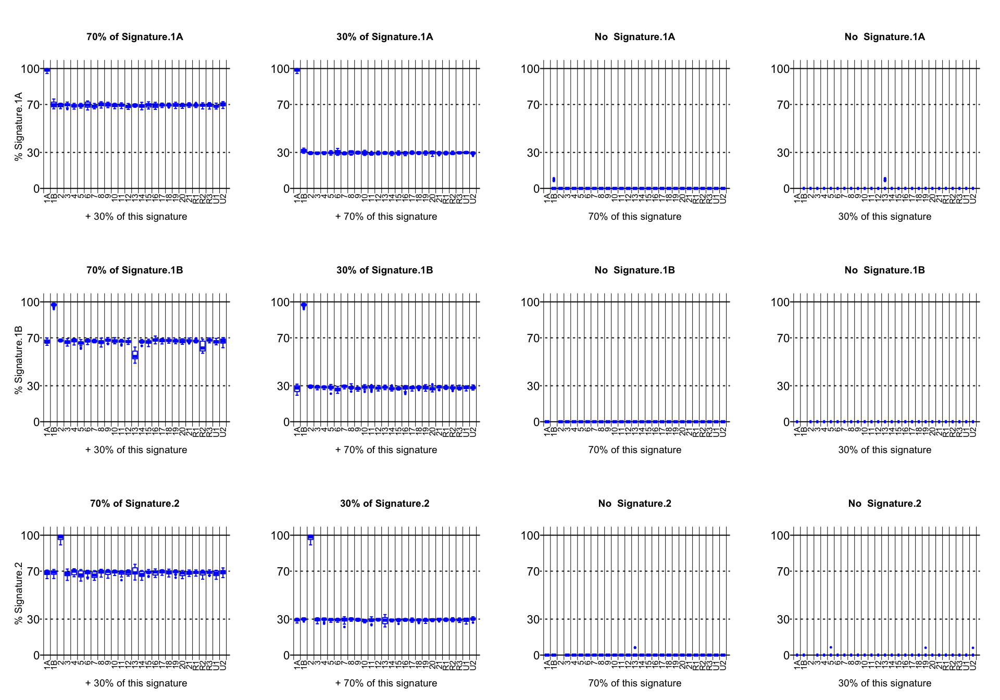Signatures 3/4/5
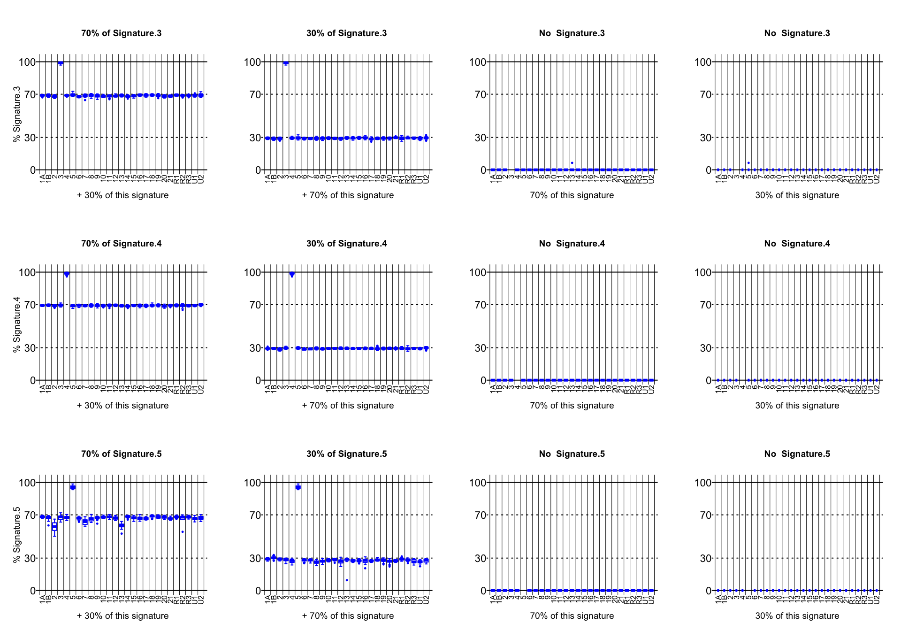Signatures 6/7/8
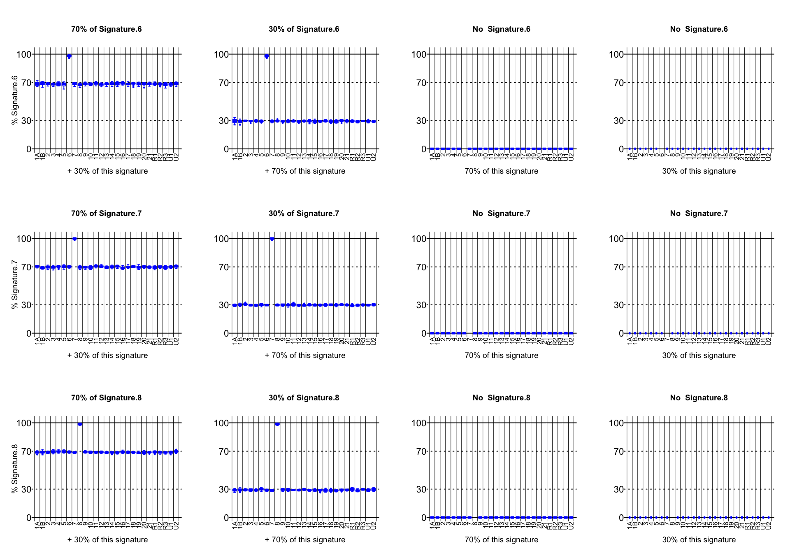Signatures 9/10/11
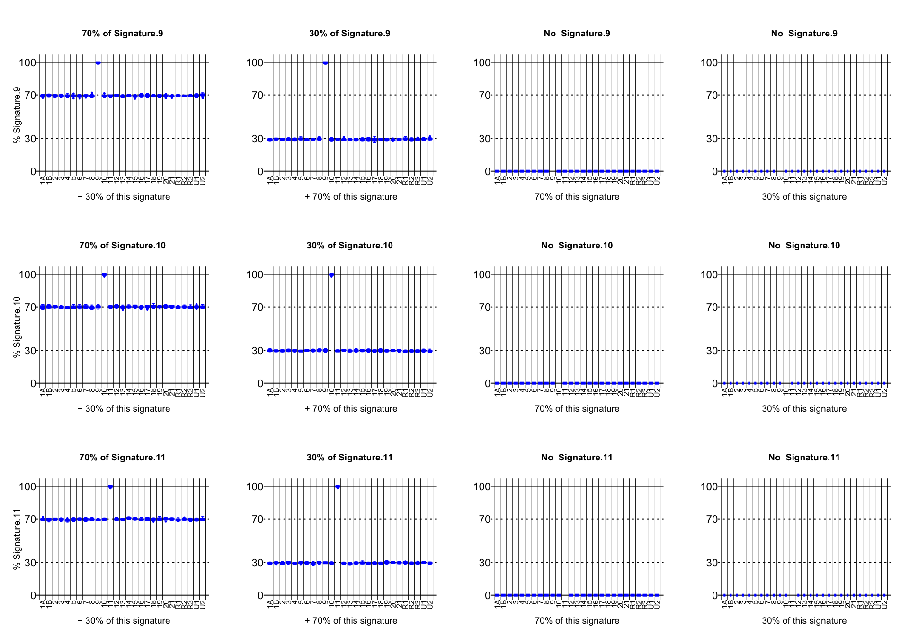Signatures 12/13/14
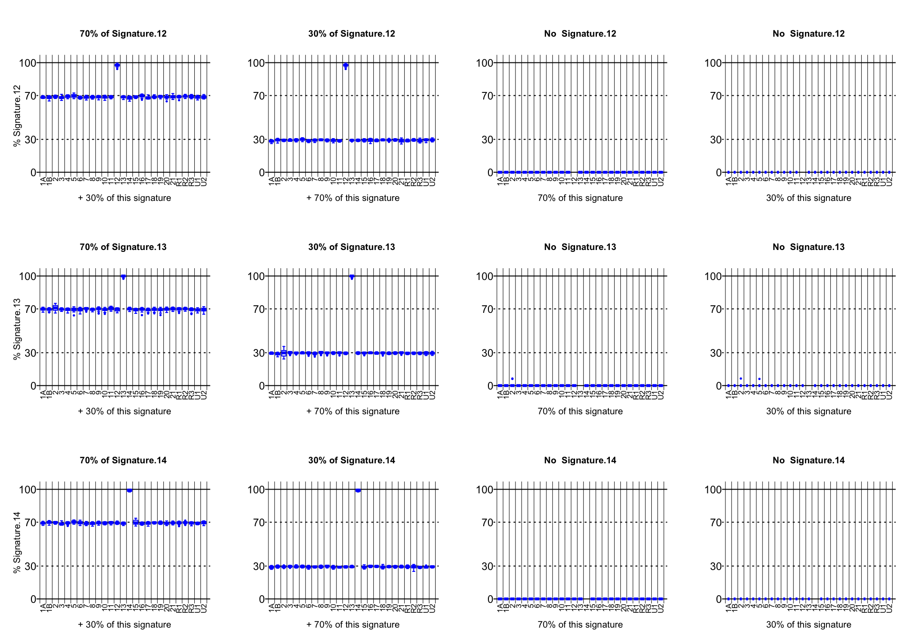Signatures 15/16/17
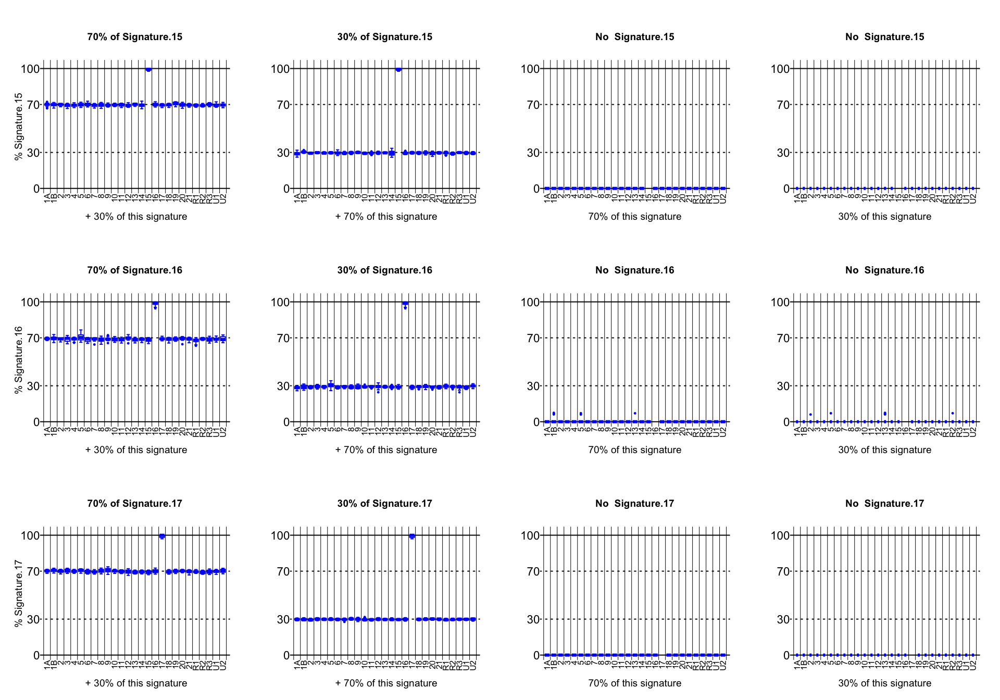Signatures 18/19/20
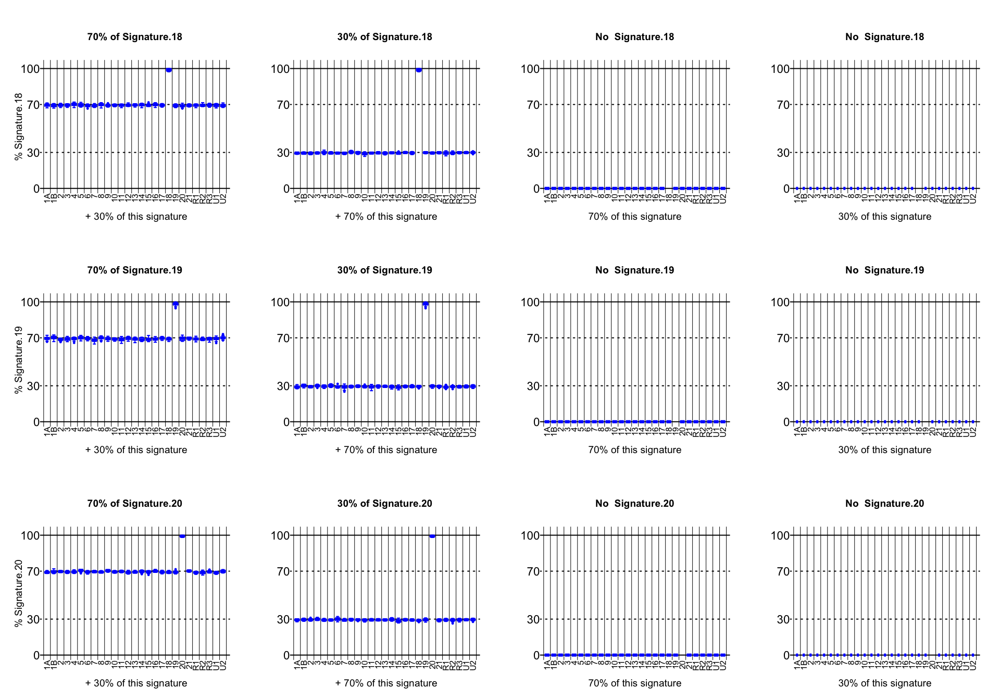Signatures 21/R1/R2
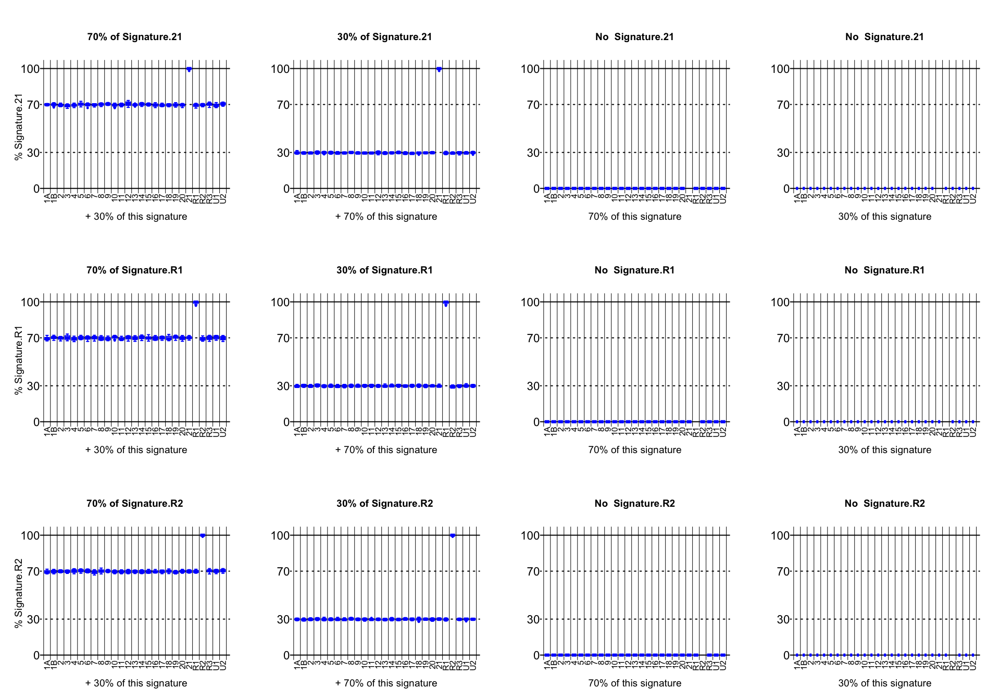Signatures R3/U1/U2
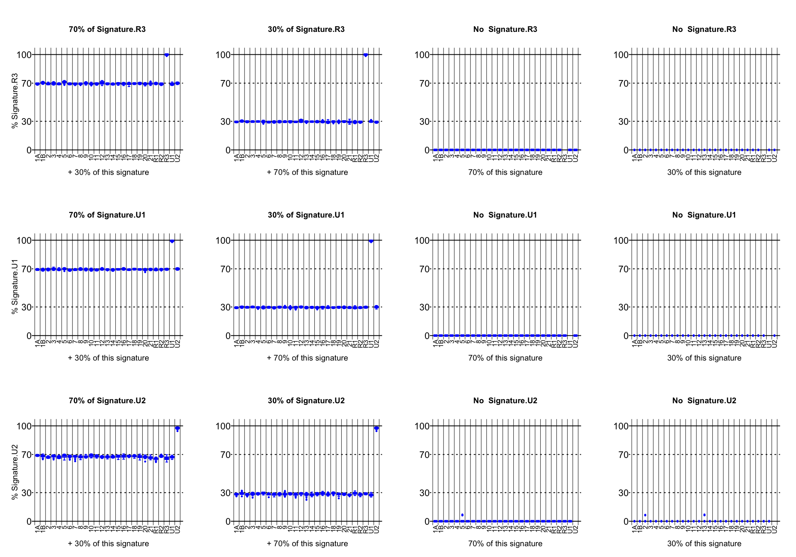60%/40% mixture of two signatures
- Setting up the global parameters for the simulation.
# Using the PMID of Rosenthal et al. as a seed.
set.seed(26899170)
simulated_profiles_60_file <- "simulated_profiles_60.rda"
signatures.ref<-as.matrix(signatures.nature2013)
noise_level <- 0.05
ratio <- 0.6;
n_sample <- 20- Building the samples.
samples_list <- generate_samples(n_sample, ratio, signatures.ref, noise_level)
samples <- samples_list[["samples"]]
sample_s1 <- samples_list[["sample_s1"]]
sample_s2 <- samples_list[["sample_s2"]]
theoretical_weights <- samples_list[["theoretical_weights"]]- Getting the predicted weights using the deconstructSig package.
DS.results <- run_deconstructSigs(samples)
DS.weights <- DS.results[["DS.weights"]]
DS.times <- DS.results[["DS.times"]]
# Save the results in an R object
simulated_profiles_60 = list(
ratio = ratio,
n_sample = n_sample,
noise_level = noise_level,
signatures = signatures.ref,
sample_s1 = sample_s1,
sample_s2 = sample_s2,
theoretical_weights = theoretical_weights,
samples = samples,
DS.weights = DS.weights,
DS.times = DS.times
)
save(simulated_profiles_60, file = simulated_profiles_60_file, compress = "bzip2")- Generate the PDF with the results.
pdf_file <- paste0("Simulated_profiles_", ratio * 100, "_", n_sample, "_", noise_level * 100, ".pdf")
pdf(pdf_file, paper = "a4r", width = 0, height = 0)
plot(NA, xlim = 0:1, ylim = 0:1,
main = paste0("Benchmark ", 100 * ratio, "% - ", 100 - ratio * 100, "%"),
axes = F, xlab = NA, ylab = NA)
text(0, 0.95, labels = "Parameters:", pos = 4)
text(0.02, 0.90, labels = paste0("- ", 100 * ratio, "% - ", 100 - ratio * 100, "% pairwise patterns"), pos = 4)
text(0.02, 0.85, labels = paste0("- ", n_sample, " samples for each combination"), pos = 4)
text(0.02, 0.80, labels = paste0("- ", noise_level * 100 , "% uniform noise"), pos = 4)
text(0, 0.70, labels = "Each row corresponds to a particular signature (27 in total)", pos = 4)
text(0, 0.65, labels = "For each signature, there are 4 boxplots showing the contribution of that signature:", pos = 4)
text(0.02, 0.60, labels = paste0("1. when it forms ", ratio * 100, "% of the simulated pattern, w.r.t. the signature that forms ", 100 - ratio * 100, "% of the pattern"), pos = 4)
text(0.02, 0.55, labels = paste0("2. when it forms ", 100 - ratio * 100, "% of the simulated pattern, w.r.t. the signature that forms ", ratio * 100, "% of the pattern"), pos = 4)
text(0.02, 0.50, labels = paste0("3. when it is not in the simulated pattern, w.r.t. the signature that forms ", ratio * 100, "% of the pattern"), pos = 4)
text(0.02, 0.45, labels = paste0("4. when it is not in the simulated pattern, w.r.t. the signature that forms ", 100 - ratio * 100, "% of the pattern"), pos = 4)
text(0, 0.35, labels = "The most challenging cases correspond to the presence of sig.1B or sig.5, especially when combined with sig.13.", pos = 4)
text(0, 0.30, labels = "Nearly all other cases behave as expected.", pos = 4)
# Prints 9 sets (pages) each with 3 rows of 4 plots (1 row per signature)
for (set in 1:9) {
split.screen(c(3, 4))
for (s1 in (3*(set-1)+1):(3*(set-1)+3)) {
boxplots(s1)
}
close.screen(all.screens = T)
}
dev.off()Results
The output is available on Simulated_profiles_60_20_5.pdf. The most challenging cases correspond to the presence of sig.1B or sig.5, especially when combined with sig.13. Nearly all other cases behave as expected.
You can also see the plots here:
Signatures 1A/1B/2
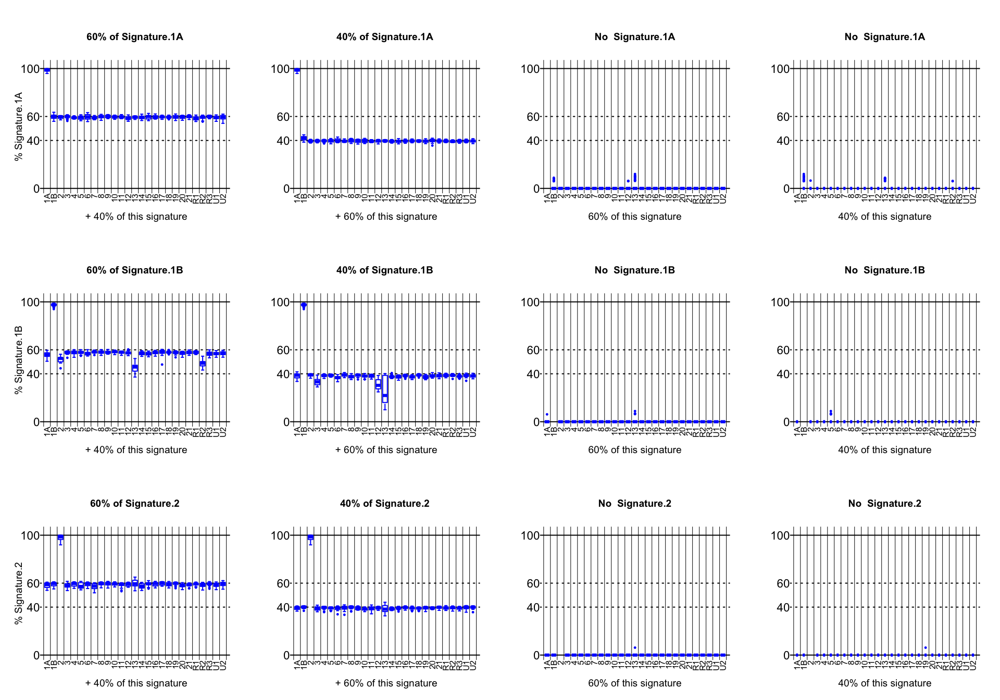Signatures 3/4/5
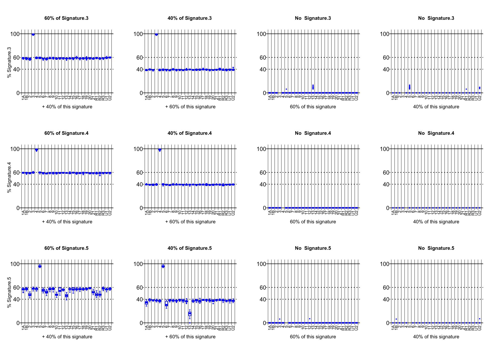Signatures 6/7/8
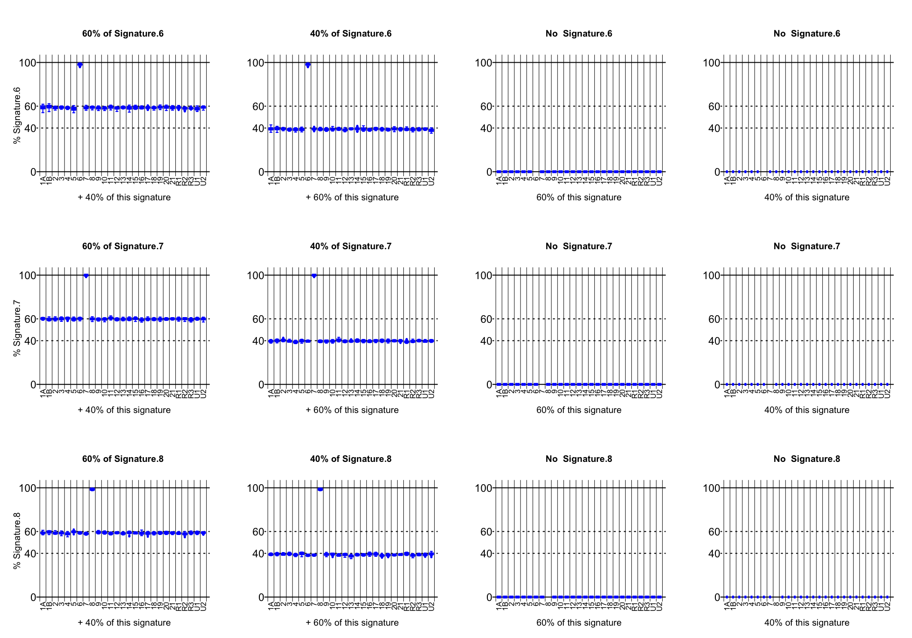Signatures 9/10/11
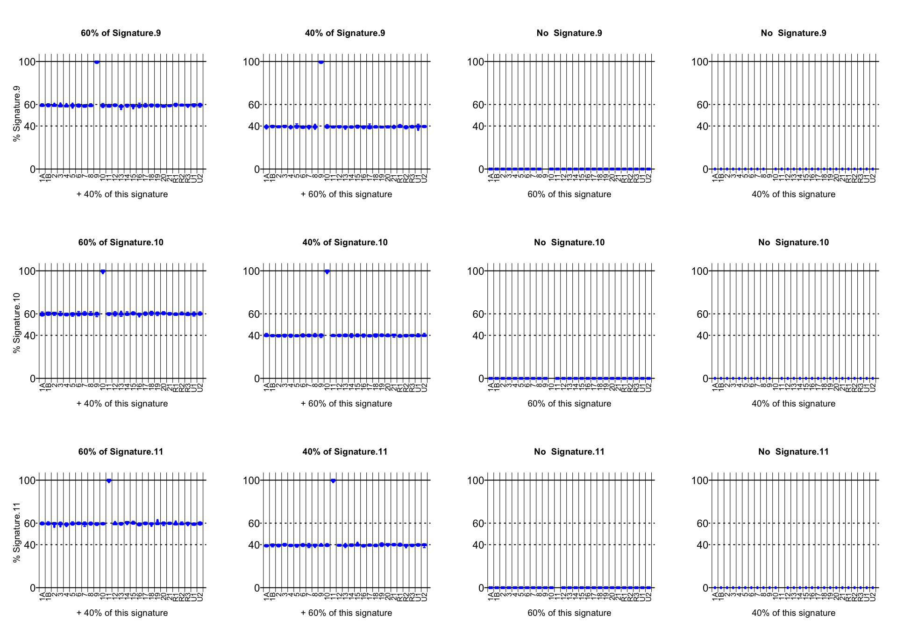Signatures 12/13/14

Signatures 15/16/17

Signatures 18/19/20
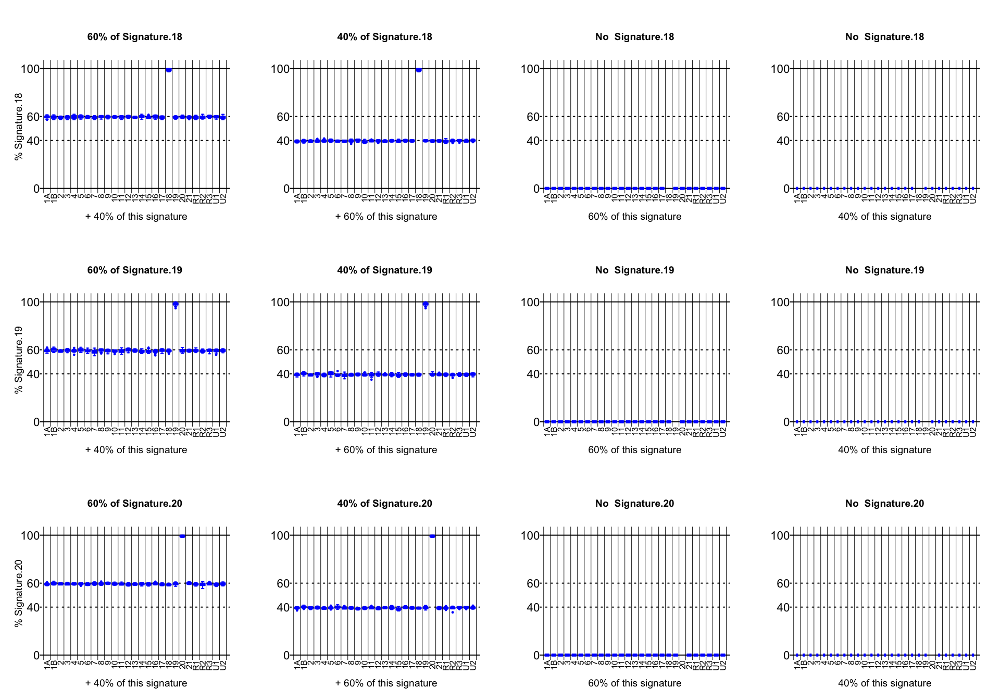Signatures 21/R1/R2
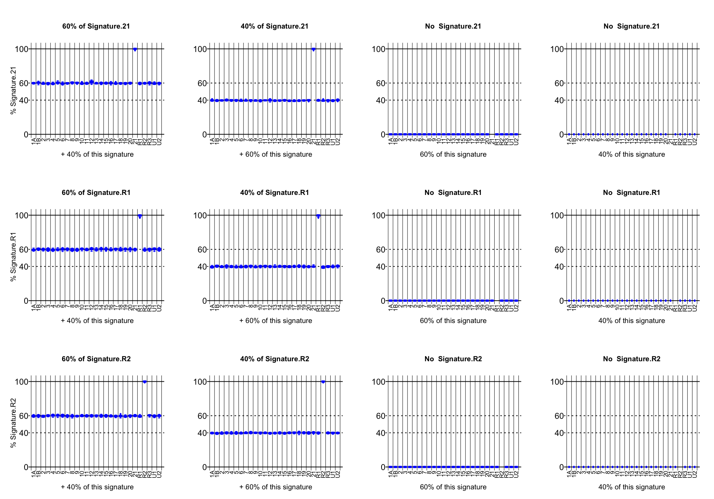Signatures R3/U1/U2
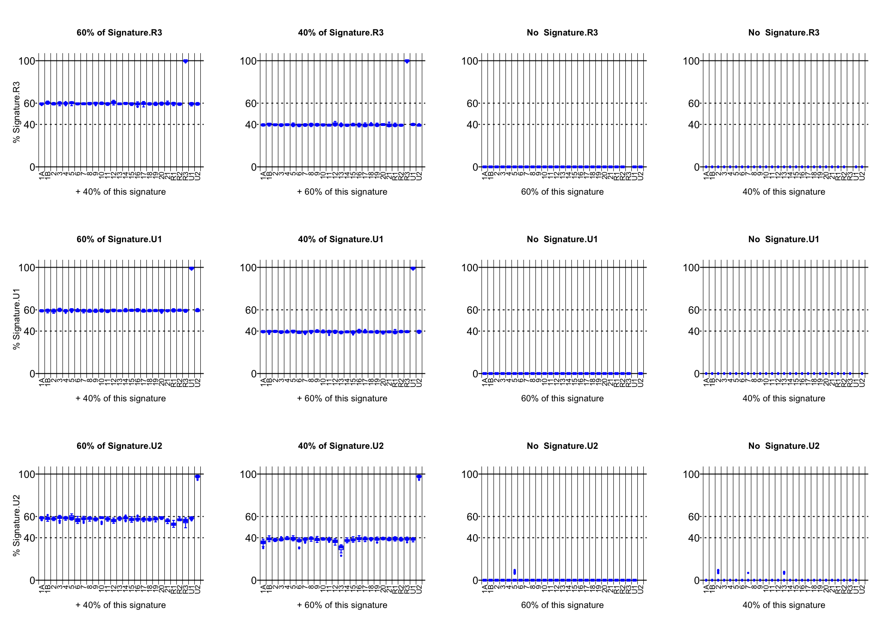Last updated: Thu Aug 18 16:24:25 2016